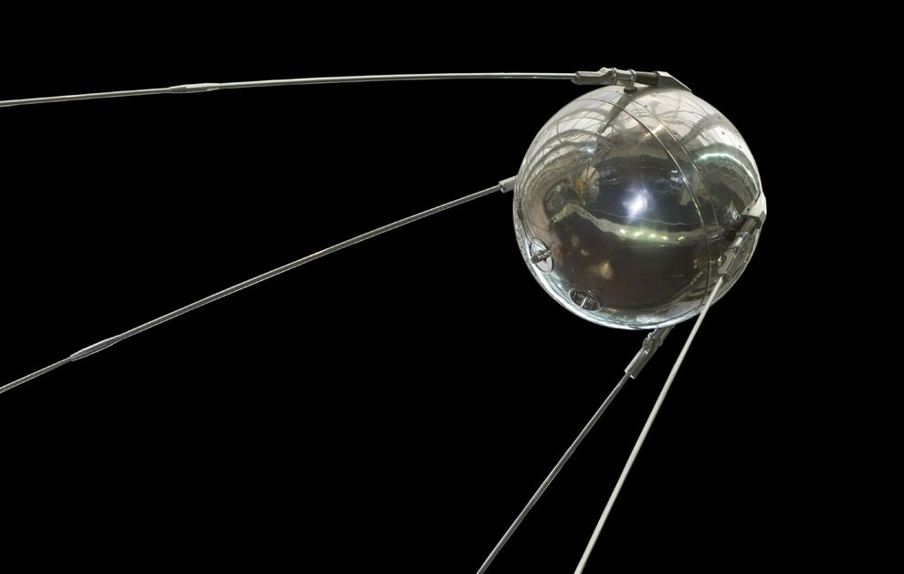

|
Sputnik 1

|
Os satélites são corpos celestes que giram em torno de planetas pela força da gravidade. Podem ser naturais como a Lua que gravita em torno da Terra ou artificiais que são veículos espaciais colocados na órbita de um planeta, de outro satélite ou do Sol. O primeiro satélite artificial da Terra foi o Sputnik 1, lançado em 04 de outubro de 1957 pelos soviéticos que iniciaram a partir daí um período de corrida espacial.
|
Os satélites artificiais transmitem sinais como de Tv, rádio e telefone, observam a Terra ou o próprio espaço para realizar experiências em microgravidade, permite estudar as mudanças climáticas, os recursos naturais e os fenômenos naturais.Há satélites que permanecem num ponto fixo da Terra ao invés de orbitar sobre ela. São chamados geoestacionários e são utilizados para comunicação e previsão do tempo.
Em 2002, a Força Aérea Americana apontou 2.783 satélites orbitando na Terra sendo que os mais tradicionais transmitem sinais de Tv e ajudam na previsão do tempo. Os outros satélites possuem funções militares a fim de espionar, funções científicas a fim de monitorar o meio ambiente e funções de observação a fim de ajudar na confecção de mapas e outros.
A ocupação do espaço em volta da Terra é controlada pela Organização das Nações Unidas (ONU) que autoriza ou nega novos lançamento e regula o ponto de posição do satélite.
Lua, nosso satélite natural
|
|
A Lua é o único satélite natural daTerra e o quinto maior do Sistema Solar. É o maior satélite natural de um planeta no sistema solar em relação ao tamanho do seu corpo primário, tendo 27% do diâmetro e 60% da densidade da Terra, o que representa ¹⁄₈₁ da sua massa.
Distância da Terra: 384.400 km
Gravidade: 1,62 m/s²
Raio: 1.737,1 km
Idade: 4,53 × 10^9 anos
Período orbital: 27 dias
Orbita: Terra
|
A Lua é o único corpo celeste para além da Terra no qual os seres humanos já pisaram. O Programa Luna, da União Soviética, foi o primeiro a atingir a Lua com sondas não tripuladas em 1959. O Programa Apollo, do governo dos Estados Unidos, permitiu a realização das únicas missões tripuladas até hoje ao satélite, desde a primeira viagem tripulada em 1968 pela Apollo 8, até seis alunagens tripuladas entre 1969 e 1972, a primeira das quais a Apollo 11. Estas missões recolheram mais de 380 quilogramas de rochas lunares que têm sido usadas no estudo sobre a origem, história geológica e estrutura interna da Lua. Após a missão Apollo 17, em 1972, a Lua foi visitada apenas por naves espaciais não tripuladas, como pela última sonda do programa soviético Lunokhod. Desde 2004, Japão, China, Índia, Estados Unidos e a Agência Espacial Europeia enviaram sondas espaciais ao satélite natural. Estas naves espaciais têm contribuído para confirmar a descoberta de água gelada em crateras lunares permanentemente escuras nos pólos e vinculada ao regolito lunar. Missões tripuladas futuras para a Lua foram planejadas, através de esforços de governos e do financiamento privado. A Lua permanece, conforme acordado no Tratado do Espaço Exterior, livre para todas as nações que queiram explorar o satélite para fins pacíficos.

|
As fases da Lua referem-se à mudança aparente da porção visível iluminada do satélite devido a sua variação da posição em relação à Terra e ao Sol. O ciclo completo, denominado lunação, leva pouco mais de 29 dias para se completar, período no qual a Lua passa da fase nova, quando a sua porção iluminada visível passa a aumentar gradualmente até que, duas semanas depois ocorra a lua cheia e, cerca de duas semanas seguintes, volta a diminuir e o satélite entra novamente na fase nova.
Eventualmente, ocorre o perfeito alinhamento entre o Sol, a Terra e a Lua, o que dá origem a eclipses. Um eclipse solar acontece quando a Lua passa em frente ao disco solar, podendo ocorrer somente durante a lua nova, enquanto que um eclipse lunar ocorre no momento em que a Lua passa através da sombra da Terra, o que pode ocorrer somente na lua cheia. Esta transição entre fases foi na antiguidade utilizada para contagem do tempo, de forma que muitos calendários lunares foram criados tendo como base o ciclo lunar.
|